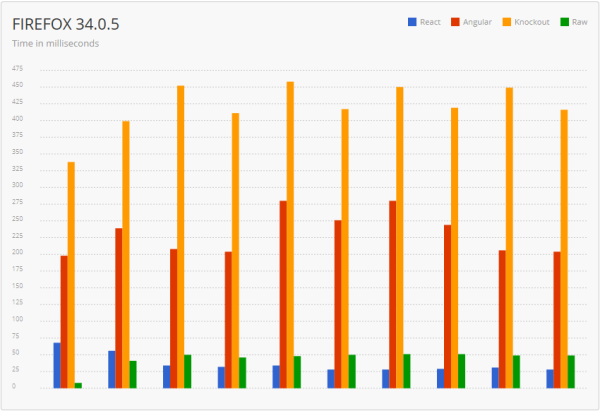
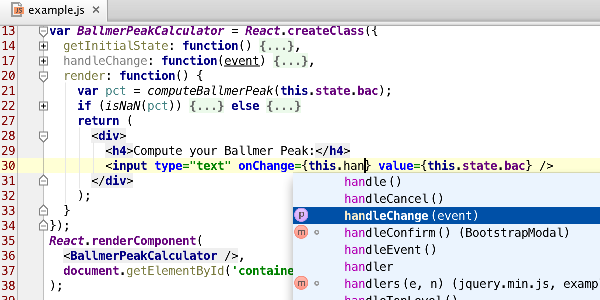

Since HTML5 became popular, the entire Web platform has made significant progress, and people have also begun to regard JavaScript as a language capable of creating complex applications. Many new APIs have emerged, and a large number of articles about how browsers apply these technologies have also appeared.
As a scripting language, JavaScript was originally created to enhance the presentation capabilities of web pages, but nowadays JavaScript is used almost everywhere you can imagine. As the technical capabilities of the entire industry continue to improve, JavaScript can now run on the server side and can also be compiled into code for native mobile applications. Today's JavaScript developers are part of a rich ecosystem, and they can freely choose from hundreds of IDEs, tools, and frameworks. Because there are so many options and resources, some developers may feel they don't know where to start learning. I am happy to discuss and outline the situation facing modern JavaScript developers. First, I will briefly introduce the history of JavaScript, and then I will cover the most popular frameworks, tools, and IDEs.
A Quick Look Back at History
Let's begin a quick journey. Back in 1995, when Netscape Navigator and Internet Explorer 1.0 were the only choices in terms of browsers. Websites were full of annoying blinking text and too many GIF images. Loading a page full of rich content over a dial-up connection could take up to two full minutes. Then a web language appeared that allowed these ancient websites to execute client-side code. That year was the year JavaScript was born.
These websites created 20 years ago didn't use JavaScript much, and of course they didn't fully explore the potential of the language. Occasionally, a pop-up dialog would tell you some information, or news would be displayed as scrolling text in a box, or a cookie would save your username so that when you returned to the site after a few months, your name would be displayed directly. Naturally, there were no job positions at the time that used JavaScript as the primary development language, and being able to actually write some JavaScript at work was already quite fortunate. In short, JavaScript's use on websites at that time was just playing some tricks in the DOM.
Today, you can basically see JavaScript just about everywhere. FromBootstrapto ReactJS, Angular, the ubiquitous jQuery, and even Node.js running on the server side, JavaScript has become one of the most important and popular web languages.
Frameworks
One of the biggest areas of change in JavaScript since its inception is the way it is used. The days of calling the awkward document.GetElementById method and creating heavy XmlHttpRequest objects are gone. Instead, various helper libraries abstract these basic functions, making JavaScript easier for developers to use. This is one of the main reasons JavaScript can be seen everywhere today.
jQuery
jQuery was released by John Resig in 2006, and it provides a rich set of tools that abstract and simplify various obscure and mysterious JavaScript commands and methods. There is no simpler way to demonstrate this tool than with code examples.
Creating an AJAX request with pure JavaScript:
function loadXMLDoc() {
var xmlhttp;
if (window.XMLHttpRequest) {
// code for IE7+, Firefox, Chrome, Opera, Safari
xmlhttp = new XMLHttpRequest();
} else {
// code for IE6, IE5
xmlhttp = new ActiveXObject("Microsoft.XMLHTTP");
}
xmlhttp.onreadystatechange = function() {
if (xmlhttp.readyState == 4 ) {
if(xmlhttp.status == 200){
alert("success");
}
else if(xmlhttp.status == 400) {
alert("error 400")
}
else {
alert("something broke")
}
}
}
xmlhttp.open("GET", "test.html", true);
xmlhttp.send();
}
Source: Stack Overflow
And creating an AJAX request with jQuery:
$.ajax({
url: "test.html",
statusCode: {
200: function() {
alert("success");
},
400: function() {
alert("error 400");
}
},
error: function() {
alert("something broke");
}
});
jQuery made complex JavaScript functions convenient to use, and DOM manipulation became a piece of cake. As a result, jQuery became one of the earliest widely used JavaScript frameworks, and its idea of abstracting JavaScript became the foundation on which various other frameworks were built.
AngularJS
AngularJS, often also called "Augular", made its debut in 2009. It is a framework created by Google with the goal of simplifying the creation of single-page applications (SPAs). Similar to jQuery, its goal is also to abstract complex operations into highly reusable methods. It provides a Model-View-Controller (MVC) architecture for JavaScript.
ReactJS
ReactJS, often also called "React", is a newcomer that has just entered the game. It was created by Facebook and first released in 2013. Facebook believes that React can serve as an alternative to Angular for handling SPA issues, so if you think Angular and React are competitors, you'd be right. However, the biggest difference compared to Angular is that React is a more efficient, higher-performance, and faster library. The following figure shows the time required to render a list of 1000 items in the DOM using React, Angular, Knockout (another library, not discussed in this article), and pure JavaScript:

Source: The Dapper Developer
If your application places a high value on performance, then React is the right choice.
JavaScript Development Environment
For efficient development, the use of an IDE is very important. IDE stands for Integrated Development Environment, an application that provides developers with a series of tools. The most important part of such a tool is usually a feature-rich text editor, which typically provides users with syntax highlighting, auto-completion, and keyboard shortcuts to speed up various tedious manual operations.
Sublime Text
Sublime Text is actually not an IDE, but a lightweight, extremely fast text editor for programming, providing syntax highlighting and intuitive keyboard shortcuts. It is cross-platform, making it an ideal choice for developers who want to use a Mac in a PC environment (or vice versa). Almost every part of Sublime Text can be customized, and it also offers a variety of plug-ins that add IDE-like features, such as Git integration and code linting. It is a great choice for JavaScript enthusiasts and novice developers. At the time of this article's publication, each Sublime Text license costs $70.

Source: Sublime Text
WebStorm
WebStorm is an intelligent IDE developed by the JetBrains team, focusing mainly on HTML, CSS, and JavaScript development. It only charges a symbolic license fee (at the time of this article's publication, it was $49), and it has gained wide recognition among experienced JavaScript experts and is already regarded as the de facto standard, and for good reason, because its built-in code completion and inspection tools are practically unique. WebStorm also provides a rich JavaScript debugger and integrates with various popular unit testing frameworks, such as the Karma test runner and JSDriver, and even includes Mocha for Node.js.
One of WebStorm's best features is its Live Edit capability. As long as a certain plug-in is installed in both Chrome and WebStorm, developers can see the results directly in the browser while changing code. Developers can also configure Live Edit to highlight changes in the browser window, which greatly improves debugging and coding productivity.
Overall, if JavaScript is your full-time job, the WebStorm IDE can be a great choice.

Source: JetBrains
Brackets
Brackets is an open-source, free IDE that focuses on visual tools. Brackets offers a Live Edit feature similar to WebStorm, allowing you to directly see the results of code changes in the browser window. It also supports inline editing, allowing you to code while viewing the results directly, without switching between different applications or using pop-up windows. One of the most interesting features in Brackets is called Extract, which can analyze Photoshop PSD files to obtain information such as fonts, colors, and sizes. Because of this feature, Brackets is very suitable for JavaScript developers who also do design work.
(Click the image to enlarge)

Source: Brackets
Atom
Atom is an open-source, free rich text editor launched by GitHub, and it is very easy to get started with. After installation, it can be run directly without needing to modify any configuration files, and it “just works.” The most interesting thing about Atom is that every aspect of it can be customized (GitHub calls it “hackable”). It is built on a web core, so users can customize its appearance by writing standard HTML, CSS, and JavaScript. Want to give Atom a different background and text font? Just change the CSS. Or you can choose to download and apply various themes that have been created for Atom. This flexibility allows Atom to present itself in the way you want. For novice JavaScript developers and users who love customization, Atom is an excellent tool.
(Click the image to enlarge)
{kind=link}
Source: Atom
Build and Automation Tools
Modern JavaScript projects are tending to become increasingly complex, and the number of changing parts is also growing. This is not to say that the language or the corresponding tools are inefficient, but rather it is a direct consequence of the richness, cool experiences, and complexity of the web applications currently being created. When working on large projects, you often have to do many repetitive tasks, whether you are about to check in code or build the code for production. These tasks may include bundling, minification, compiling LESS or SASS CSS files, or even running tests. Doing these tasks manually is not only frustrating but also inefficient. A better approach is to automate these tasks through a build tool that supports them.
Bundling and Minification
Most of the JavaScript and CSS you write will be shared across multiple web pages. Therefore, you will likely put this content into separate .js and .css files, and then reference these files in web pages. As a result, the user's browser, in order to fully display your web page, needs to send a separate HTTP request to fetch each of these files (or at least verify whether these files have changed).
HTTP requests are expensive. In addition to the size of the request itself, you also pay for network latency, HTTP headers, cookies, and so on. The design purpose of bundling and minification tools is to reduce, or even completely eliminate, the impact of these requests.
Bundling
The simplest thing developers can do to improve the performance of web code is to bundle the code. In the bundling process, multiple JavaScript or CSS files are merged into a single JavaScript or CSS file. It feels like joining multiple individual panoramic photos together to make a single continuous photo. By bundling JavaScript and CSS files, we can eliminate a large portion of HTTP request overhead.
Minification
Another way JavaScript developers can improve performance is to minify the code that has just been bundled. The minification process compresses JavaScript and CSS code into the smallest possible form while ensuring functionality remains unchanged. For JavaScript, this means renaming variables to meaningless single-character names and removing all whitespace and formatting characters. For CSS, since page styling depends on the names of variables, typically only formatting and whitespace are removed. Minification can greatly improve network performance because it reduces the number of bytes in each HTTP response.
Unminified AJAX JavaScript code (same as the code shown above):
$.ajax({
url: "test.html",
statusCode: {
200: function() {
alert("success");
},
400: function() {
alert("error 400");
}
},
error: function() {
alert("something broke");
}
});
The same code after minification:
$.ajax({url:"test.html",statusCode:{200:function() {alert("success");},
400:function(){alert("error 400");}},error:function(){alert("something broke");}});
Please note that I have separated the minified output into two lines only for easier reading in this article; in fact, minified output is usually a single line.
When to Bundle and Minify
Generally, the bundling and minification steps are performed only in production. This is done so that you can debug the original source code, which contains formatting and line numbers, in your local or development environment. Debugging minified code like that shown above is very difficult because all the code is squeezed into one line. Moreover, minified code becomes completely unreadable, and you will find it useless and extremely frustrating when you try to debug.
Source Map Files
Sometimes, certain bugs in the code can only be reproduced in production. As a result, minified code becomes a problem when you need to debug certain issues. Fortunately, JavaScript supports source map files, which can 'map' between minified code and the original source code. These source map files are generated during the minification phase by some of the build tools mentioned below. Your JavaScript debugger can then use these map files to provide you with clean, readable code for debugging. You should publish the map files together with the actual code as much as possible, so that you can debug the code when something goes wrong.
Code Linting
Linting tools check your code for common mistakes and issues according to predefined formatting rules. The errors reported by these tools are usually similar to the following: using tab indentation instead of spaces, omitting semicolons at the end of lines, or using braces without using if, for, or while statements. Most IDEs include linting tools, and some other IDEs allow users to install linting plugins themselves.
The two most popular JavaScript linting tools are JSHint and JSLint. JSLint is a linting framework developed by Doug Crockford, while JSHint was forked from JSLint by community members. They differ only in some of their respective code formatting standards. My suggestion is to try both and then choose the one that best suits your coding style.
Task Automation: Grunt
Despite its name, Grunt (which literally means to snore) is by no means a rough tool; it is a robust command-line build tool that can run a variety of user-defined tasks. By setting up a simple configuration file, you can have Grunt do all sorts of work, such as compiling LESS or SASS files, bundling and minifying all JavaScript and CSS files in a specific folder, or even running some linting tool or test framework. You can also configure Grunt to run as a Git hook, automatically minifying and bundling your code when you check in to your source control repository.
Grunt supports named targets, allowing you to specify different commands for different environments. For example, you can designate 'dev' and 'prod' as targets. This is very useful in scenarios such as bundling and minifying code in production while skipping that step in the development environment to facilitate debugging.
A very useful feature in Grunt is called 'grunt watch', which can monitor changes to files in a directory or to a set of files. This feature can be integrated into IDEs such as WebStorm and Sublime Text. By using the watch feature, you can trigger events based on file changes. Compiling LESS or SASS is a practical use of this feature: you can set up Grunt to watch your LESS or SASS files and compile them immediately when they change, and the compiled files can then be used directly in the development environment. You can also have Grunt watch and automatically run some linting tool after you modify each file. Performing tasks in real time through Grunt watch is an excellent way to accelerate your productivity.
Task Automation: Gulp
Grunt and Gulp are both tools for solving build automation problems, and they can be said to be direct competitors. The main difference between them is that Grunt focuses more on configuration, while Gulp focuses more on code. In a Gruntfile, you configure build tasks through declarative JSON, while in a Gulpfile you accomplish the same functionality by writing JavaScript functions.
The following Grunt configuration file compiles SASS files into CSS files when the SASS files change:
grunt.initConfig({
sass: {
dist: {
files: [{
cwd: "app/styles",
src: "**/*.scss",
dest: "../.tmp/styles",
expand: true,
ext: ".css"
}]
}
},
autoprefixer: {
options: ["last 1 version"],
dist: {
files: [{
expand: true,
cwd: ".tmp/styles",
src: "{,*/}*.css",
dest: "dist/styles"
}]
}
},
watch: {
styles: {
files: ["app/styles/{,*/}*.scss"],
tasks: ["sass:dist", "autoprefixer:dist"]
}
}
});
grunt.registerTask("default", ["styles", "watch"]);
Source: Grunt vs Gulp – Beyond the Numbers
The following Gulp configuration file likewise compiles SASS files into CSS files when the SASS files change:
gulp.task("sass", function () {
gulp.src("app/styles/**/*.scss")
.pipe(sass())
.pipe(autoprefixer("last 1 version"))
.pipe(gulp.dest("dist/styles"));
});
gulp.task("default", function() {
gulp.run("sass");
gulp.watch("app/styles/**/*.scss", function() {
gulp.run("sass");
});
});
Source: Grunt vs Gulp – Beyond the Numbers
I suggest you can freely choose whichever one you like. These two tools are generallynpmdownloaded via Node.js's package manager.
Summary
JavaScript has undergone tremendous improvements since its birth in the early days of the internet. Today, it has become a prominent and important component of interactive web applications.
Developers have also experienced tremendous changes from 1995 up to the present. Today's developers are more willing to use rich and robust frameworks, tools, and IDEs to improve work efficiency and productivity.
Creating your first modern JavaScript application may be easier than you think! Just choose an IDE (I recommend for beginnersAtom), then installnpm和grunt. If you get stuck somewhere later,Stack Overflowis a very good resource. With just a little time spent learning the fundamentals, you will quickly be able to start developing and eventually publish your first modern JavaScript application.
Resources
Tutorials:
Frameworks:
IDE：
Linting Tools:
Build and Automation Tools
Useful Resources
Source: http://www.infoq.com/cn/articles/modern-javascript-toolbox
Click to share notes
<p style="font-size:14px;">The note must be an extension of the content of this article!</p><br> <p style="font-size:12px;"><a href="../tougao.html" target="_blank">To submit an article, click here</a></p> <p style="font-size:14px;"><a href="./runoob-user-test-intro.html" target="_blank">How to get a registration invitation code</a></p> <h3 class="text-muted"><i class="fa fa-info-circle" aria-hidden="true"></i> You must <a href=".." class="runoob-pop">log in</a> before sharing notes!</h3> <p><a href="./runoob-user-test-intro.html" target="_blank">How to get a registration invitation code</a></p>